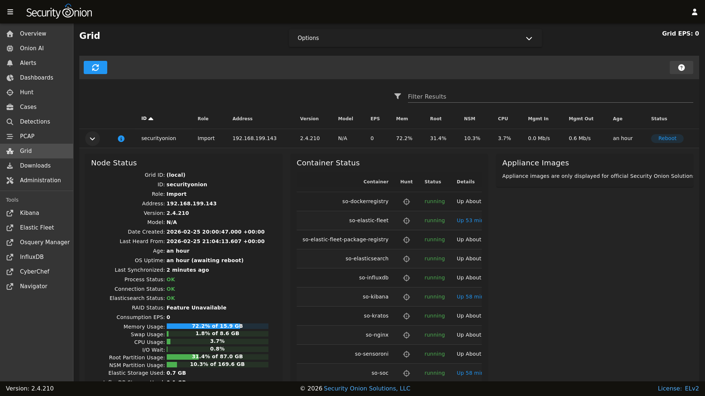
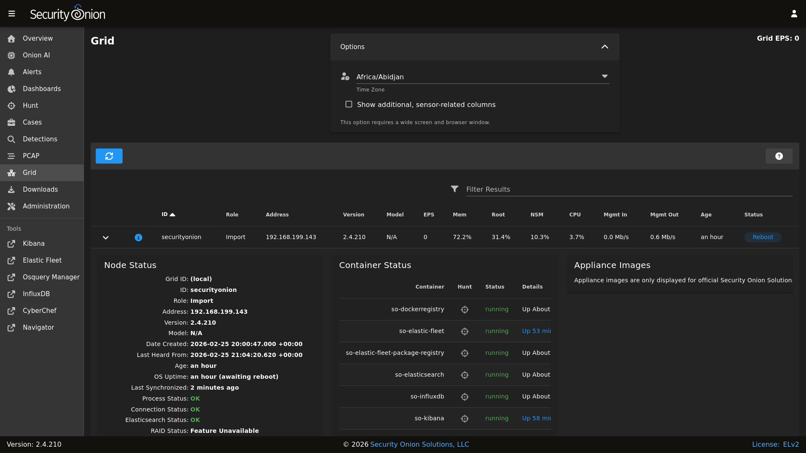
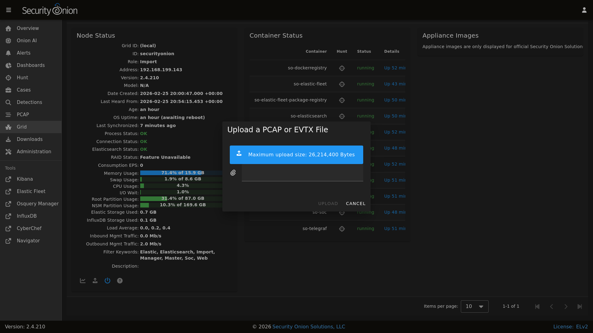

Grid
Security Onion Console (SOC) includes a Grid interface which allows you to quickly check the status of all nodes in your grid.
{kind=link}

Starting at the top of the page, there is a Grid EPS value in the upper-right corner that shows the sum of all Consumption EPS measurements in the entire grid. Below that you will find a list of all nodes in your grid.
Warning
Please note that new nodes start off showing a red Fault and may take a few minutes to fully initialize before they show a green OK.
Note
The EPS column represents Events Per Second consumed, so it will only be relevant on nodes that ingest data. Pure sensors do not ingest events, so those nodes will show 0 EPS. If you want to identify sensors that are generating large volumes of events, you can sort by the Mgmt Out column, which shows the outbound traffic throughput on the management network interface.
The options dropdown near the top of the page includes a checkbox which will show additional sensor-related columns in the table. You can use these sortable columns to help identify sensors that may be underperforming or due for a hardware upgrade. As these additional columns take up significant screen area, they will only be visible on wide displays where the SOC web browser window is wide enough to show a large number of tabular columns.
{kind=link}

You can drill into individual nodes to see detailed information including Node Status, Container Status, and Appliance Images.
Node Status
The Node Status section displays many different fields relating to each node’s status.
Note
If a node has not checked in recently then the metrics and statuses for that node will be slightly grayed out, to indicate that the values are stale.
ID
The ID field shows the hostname assigned to the node.
Role
The Role field shows the type of Security Onion node that was selected during Security Onion setup.
Address
The Address field shows the network IP address assigned to the management interface of the node.
Version
The Version field shows the version of Security Onion installed on this node.
Model
The Model field shows the official Security Onion Solutions appliance model number. For non-SOS devices, this field will show N/A.
Date Created
The Date Created field shows the date the node was created. This date is based on the node’s filesystem timestamps, so replacing partition data or manually recreating core areas of the filesystem can interfere with assessing a node’s true age.
Earliest PCAP
The Earliest PCAP field shows the earliest PCAP that is available on a sensor node and is only visible on sensor nodes which capture live packet data.
Last Heard From
The Last Heard From field shows the last time that the node checked-in with the manager. Note that a check-in doesn’t always include updated node metrics.
Age
The Age field shows how long the node has been part of the grid and is based on the Date Created value.
OS Uptime
The OS Uptime field shows how long the node has been running since the last power-on or reboot event.
If the node needs to be restarted to apply kernel updates then a message will appear next to the uptime value indicating this. The reboot button at the bottom of the grid page allows administrators to remotely reboot a node via the SOC web interface.
Last Synchronized
The Last Synchronized field shows how long ago the node was synchronized to the manager node. This is equivalent to the last Salt highstate run. Knowing this value can be helpful when making configuration changes to the grid and determining whether a specific node has received those changes.
Process Status
If the Process Status field shows Fault, you can check the other status indicators as well as the Container Status section to determine which process has failed.
Connection Status
The Connection Status field shows whether or not the node is currently connected to the grid.
Elasticsearch Status
If the node runs Elasticsearch, then the Elasticsearch Status field will show the status of it. If the status is anything other than OK, then see the Elasticsearch section to troubleshoot.
RAID Status
If you are using an official Security Onion Solutions appliance with RAID support, then you will see the corresponding status appear in this field.
Consumption EPS
The Consumption EPS field is the number of Events Per Second consumed.
Memory Usage
The Memory Usage field shows the system memory percentage used, as well as the total memory, in gigabytes. If this value is consistently in the red, then it may be time to add more system memory. Consistently red usage will likely end up causing node faults due to some services being automatically shutdown to recover memory for more critical processes.
Swap Usage
The Swap Usage field shows the system swap percentage used, as well as the total swap, in gigabytes. Systems that do not have swap enabled will remain at 0.0%. If this value is consistently in the red, then it may be time to increase the system memory and potentially the swap size.
CPU Usage
The CPU Usage field shows the system CPU percentage used, across all cores. If this value is consistently in the red, then it may be time to upgrade the node hardware or distribute the load across additional nodes.
I/O Wait
The I/O Wait field shows the system I/O wait percentage. Higher values indicate the system is spending more time waiting for network or disk data transfer. If this value is consistently in the red, then it may be time to replace slow disks or expand network throughput capacity.
Capture Loss
The Capture Loss field shows the percentage of packet capture loss reported by Zeek. Higher values indicate a reduced visibility into packets traversing the network. If Zeek is reporting capture loss but no packet loss, this usually means that the capture loss is happening upstream in the TAP or SPAN port itself.
Zeek Loss
The Zeek Loss field shows the percentage of dropped packets due to Zeek being unable to keep up with the flow of network data.
Suricata Loss
The Suricata Loss field shows the percentage of dropped packets due to Suricata being unable to keep up with the flow of network data.
Stenographer Loss
The Stenographer Loss field shows the percentage of dropped packets due to Stenographer being unable to keep up with the flow of network data. Stenographer is responsible for writing down all packets to disk, as well as indexing these packets.
Root Partition Usage
The Root Partition Usage field shows the percentage of the root OS disk utilization, as well as the total capacity of that disk (or partition). If this value is consistently in the red, then it can lead to problems including being unable to upgrade OS packages and Security Onion, the inability to save system logs, and other critical issues.
NSM Partition Usage
The NSM Partition Usage field shows the percentage of the NSM disk utilization, as well as the total capacity of that disk (or partition). If this value is consistently in the red, then it can lead to problems including being unable to ingest new events, store PCAP on disk, detect anomalous events, and other critical issues.
Elastic Storage Used
The Elastic Storage Used field shows the total gigabytes used by Elasticsearch to store the ingested events, across all indices.
InfluxDB Storage Used
The InfluxDB Storage Used field shows the total gigabytes used by InfluxDB to store the current and historic metric data collected from all nodes in the grid.
PCAP Retention
The PCAP Retention field shows the number of historic days of available packet capture data which can be viewed by analysts using the SOC PCAP tool.
Load Average
The Load Average field shows the 1 minute, 5 minute, and 15 minute load averages for the node. Note that on systems with high numbers of CPU cores, this average can be equally as high. For example, if a system has 128 cores then a load average of 128 generally indicates that all 128 cores are working at the peak capacity. Exceeding that number can indicate that some cores are bottlenecked due to waiting on I/O.
Redis Queue Size
The Redis Queue Size field shows the number of events queued in Redis waiting to be ingested into Elasticsearch. If this number is either steady or falling then it indicates the system is able to keep up with the current traffic flow. If this number is continually increasing then it can indicate a problem with ingest times taking too long for the amount of events that are being generated. Occasional increases are expected during traffic bursts but should eventually start to decrease once the high traffic flow period ends.
Inbound Monitor Traffic
The Inbound Monitor Traffic field shows the throughput of inbound bytes reaching the sensor’s monitoring interface.
Dropped Monitor Traffic
The Dropped Monitor Traffic field shows the throughput of inbound bytes intended for the sensor’s monitoring interface but are instead dropped, typically due to insufficient network capacity.
Inbound Mgmt Traffic
The Inbound Mgmt Traffic field shows the throughput of inbound bytes intended for the node’s management interface. This is the internal interface that the node uses to communicate with other nodes in the Security Onion grid.
Outbound Mgmt Traffic
The Outbound Mgmt Traffic field shows the throughput of outbound bytes being transmitted from the node’s management interface. This is the internal interface that the node uses to communicate with other nodes in the Security Onion grid.
Filter Keywords
The Filter Keywords fields shows the list of keywords that are associated with this node type. These keywords are useful for filtering to only show nodes of a certain type.
Description
The Description field shows the optional description you may have entered during Setup or set in Administration –> Configuration –> sensoroni –> config –> node_description.
Icons in Lower Left Corner
There are a few icons in the lower left of the Node Status section depending on what kind of node you are looking at:
Clicking the first icon takes you to the InfluxDB dashboard for that particular node, to view historic health metrics and trends.
If the node is a network sensor, then there will be an additional icon for sending test traffic to the sensor.
Depending on the node type, there may be an additional icon for uploading your own PCAP or EVTX file. Clicking this icon results in an upload form. Once you’ve selected a file and initiated the upload, a status message appears. Uploaded PCAP files are automatically imported via so-import-pcap and EVTX files are automatically imported via so-import-evtx. Once the import is complete, a message will appear containing a hyperlink to view the logs from the import. Please note that import is not supported on heavy nodes. Also note that this import method is designed for smaller files. If you need to import files larger than the default max upload size then you will need to either change the max upload size via the Configuration screen, or manually import via so-import-pcap or so-import-evtx.

The reboot button allows for remotely rebooting a grid node. This may be necessary when scheduled OS/kernel updates are automatically applied and require a restart to take effect. Review the notes on the confirmation dialog thoroughly before confirming a reboot. Rebooting a manager node will likely cause the SOC web interface to become temporarily unavailable.
Clicking the question mark button takes you to this help document.
{kind=link}
Container Status
Note
Restarting a node can take several minutes for all containers to return to a running state.
If any containers show anything other than running click the cross-hair icon next to the container name. This will bring up the Hunt screen showing logs specific to that container, and may help determine why the container is not running.
Appliance Images
If a node is running on an official Security Onion Solutions appliance then the grid page will show pictures of the front and rear of the appliance. This is useful for walking through connectivity discussions with personnel in the data center. When not using official Security Onion Solutions appliances it will simply display a message to that effect.
Other Grid Pages
Note
You can manage Grid members and Grid configuration in the Administration section.